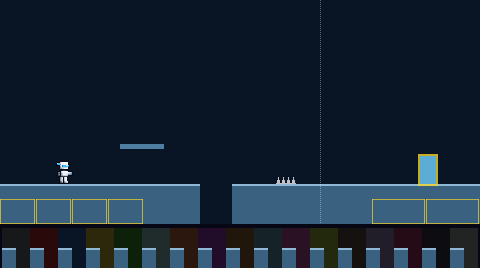
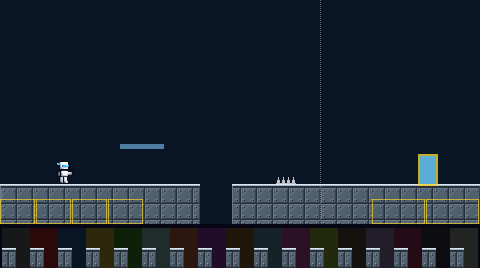
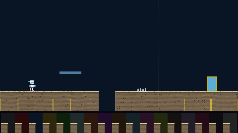
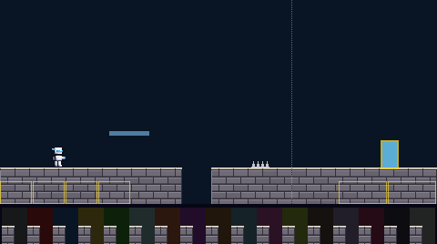

The solid strip you stand on between rooms, 40 pixels deep below the floor line. A pit is only the gap in it, so its lit 2-pixel top edge is what shows where every pit starts; the thumb pads cover its lower part. The strip under each picture is the pit's edge in front of every boss's backdrop. Shown on the way to the Water boss, the hardest case for a dark ground.
Flat blue-grey under a pale edge.
Worst contrast against the 17 backdrops: ground 2.20, edge 6.85, the player on it 6.56. The game asks at least 2, 4.5 and 4.5.

16-pixel riveted panels under a bright steel lip. The plates line up across pits, so the ground reads as one built thing.
Worst contrast: ground 2.22, edge 6.84, the player on it 6.48.

A sunlit stone lip over dithered strata with pebbles, and a soft shadow hanging under the lip.
Worst contrast: ground 2.25, edge 6.28, the player on it 6.40.

Staggered 16-by-8 bricks under a pale stone lip, each brick a slightly different shade.
Worst contrast: ground 2.74, edge 6.11, the player on it 5.27.

Picked by the owner on 5 Nov 2026: A, steel plates, one look everywhere for now, no busier than drawn. Both questions answered the same day. It goes into the game together with the rest of the world pieces, once they are all picked. Later that day the owner's new plan gave every slice its own world pieces, and steel plates became the Steel slice's.